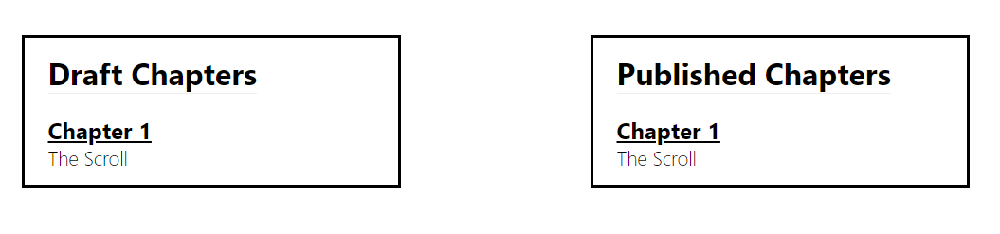

A story that I am excited to write. I haven't fully decided what this story is going to be, but I'm excited about it. I work in IT and I have been writing in our ticketing system 'Will Monitor', and I thought that could make a great name. So that's what this is.
This is the untold story of Will Monitor and his hunt for the infinite scroll! Oh wow, I think I just got an idea.
I've got this crazy idea that I'm going to actually write this story, truly. So, I'm making this the place for that story. All online, no printed editions (for now). This is going to the home for the chapters and the stories.
I may not know where a chapter goes, so it might not have a number initally.
And eventually there will be two columns, like this. One for Published and one for drafts. I like the idea of seeing progress as it's made, so you will be able to read both the draft version and the published version. There might be a number attached to the draft chapter, if it has mutiple versions. We'll just see how this plays out.